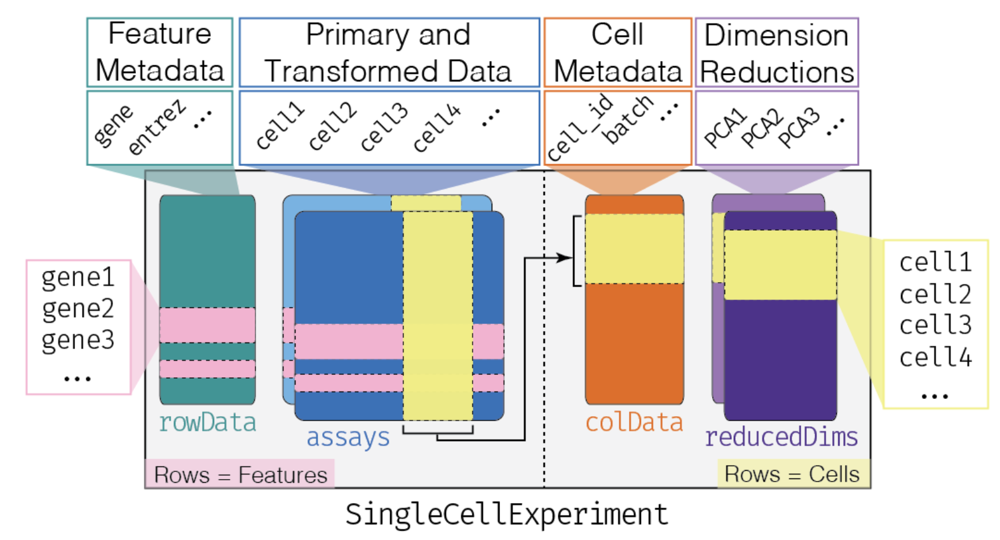

install.packages('mgcv')
BiocManager::install('HCAData')
remotes::install_github('danielschw188/revelio')Demonstration: leveraging R/Bioconductor for single-cell analyses
Goals:
- Refreshing your knowledge on R
- Introducing the
SingleCellExperimentobject and exploratory data analysis
1. Installing packages in R
“Hey, I’ve heard so many good things about this piece of software, it’s called ‘Seurat’? Heard of it? I wanna try it out soooo badly!”
In other words: “how do I install this or that brand new cutting-edge fancy package?”
R works with packages, available from different sources:
-
CRAN, theRdeveloper team and official package provider: CRAN (which can probably win the title of “the worst webpage ever designed in 1982”). -
Bioconductor, another package provider, with a primary focus on genomic-related packages: Bioconductor. - Other unofficial sources, such as
GitHub.
Package help pages are available at different places, depending on their source. That being said, there is a place I like to go to easily find information related to most packages:
2. Basic R and Bioconductor classes
While CRAN is a repository of general-purpose packages, Bioconductor is the greatest source of analytical tools, data and workflows dedicated to genomic projects in R. Read more about Bioconductor to fully understand how it builds up on top of R general features, especially with the specific classes it introduces.
The two main concepts behind Bioconductor’s success are the non-redundant classes of objects it provides and their inter-operability. Huber et al., Nat. Methods 2015 summarizes it well.
Important R concepts:
tibble tables:
tibbles are built on the fundamental data.frame objects. They follow “tidy” concepts, all gathered in a common tidyverse. This set of key concepts help general data investigation and data visualization through a set of associated packages such as ggplot2.
Reading text files into tibbles
tibbles can be created from text files (or Excel files) using the readr package (part of tidyverse)
dir.create('data/R_101/')
download.file('https://ftp.ncbi.nlm.nih.gov/geo/samples/GSM4486nnn/GSM4486714/suppl/GSM4486714_AXH009_genes.tsv.gz', 'data/R_101/GSM4486714_AXH009_genes.tsv.gz')
genes <- read_tsv('data/R_101/GSM4486714_AXH009_genes.tsv.gz', col_names = c('ID', 'Symbol'))
genesHandling of tibbles:
tibbles can be readily “sliced” (i.e. selecting rows by number/name), “filtered” (i.e. selecting rows by condition) and columns can be “selected”. All these operations are performed using verbs (most of them provided by the dplyr package, part of tidyverse).
# `slice` extract certain *rows* by integer location
slice(genes, 1:4)
slice_head(genes)
slice_sample(genes, n = 10)
# `filter` subsets the tibble, retaining all rows that satisfy your condition(s)
filter(genes, Symbol == 'CCDC67')
filter(genes, grepl('^CCDC.*', Symbol))
filter(genes, grepl('^CCDC.*', Symbol), grepl('.*5$', Symbol))
# `select` extract `columns` by integer location, name, or pattern...
select(genes, 1)
select(genes, ID)
select(genes, matches('Sym.*'))Columns can also be quickly added/modified using the mutate verb.
%>% pipe:
Actions on tibbles can be piped as a chain, just like | pipes stdout as the stdin of the next command in bash. In this case, the first argument is always the output of the previous function and is ommited. Because tidyverse functions generally return a modified version of the input, pipping works remarkably well in such context.
Important Bioconductor concepts:
SummarizedExperiment class:
The most fundamental class used to hold the content of large-scale quantitative analyses, such as counts of RNA-seq experiments, or high-throughput cytometry experiments or proteomics experiments.

Make sure you understand the structure of objects from this class. A dedicated workshop that I would recommend quickly going over is available here. Generally speaking, a SummarizedExperiment object contains matrix-like objects (the assays), with rows representing features (e.g. genes, transcripts, …) and each column representing a sample. Information specific to genes and samples are stored in “parallel” data frames, for example to store gene locations, tissue of expression, biotypes (for genes) or batch, generation date, or machine ID (for samples). On top of that, metadata are also stored in the object (to store description of a project, …).
An important difference with S3 list-like objects usually used in R is most of the underlying data (organized in "slots") is accessed using getter functions, rather than the familiar $ or [. Here are some important getters:
- `assay()`, `assays()`: Extrant matrix-like or list of matrix-like objects of identical dimensions. Since the objects are `matrix`-like, `dim()`, `dimnames()`, and 2-dimensional `[`, `[<-` methods are available.
- colData(): Annotations on each column (as a DataFrame): usually, description of each sample
- rowData(): Annotations on each row (as a DataFrame): usually, description of each gene
- metadata(): List of unstructured metadata describing the overall content of the object.Let’s dig into an example (you may need to install the airway package from Bioconductor…)
library(SummarizedExperiment)
#BiocManager::install('airway')
library(airway)
data(airway)
airway
GenomicRanges class (a.k.a. GRanges):
GenomicRanges are a type of IntervalRanges, they are useful to describe genomic intervals. Each entry in a GRanges object has a seqnames(), a start() and an end() coordinates, a strand(), as well as associated metadata (mcols()). They can be built from scratch using tibbles converted with makeGRangesFromDataFrame().
library(GenomicRanges)
gr <- genes %>%
mutate(
chr = sample(1:22, n(), replace = TRUE),
start = sample(1:1000, n(), replace = TRUE),
end = sample(10000:20000, n(), replace = TRUE),
strand = sample(c('-', '+'), n(), replace = TRUE)
) %>%
makeGRangesFromDataFrame(keep.extra.columns = TRUE)
gr
mcols(gr)Just like tidyverse in R, tidy functions are provided for GRanges by the plyranges package.
3. CRAN & Bioconductor approaches to scRNAseq
scRNAseq in Bioconductor
For single-cell RNA-seq projects, Bioconductor has been introducting new classes and standards very rapidly in the past few years. Notably, several packages are increasingly becoming central for single-cell analysis:
- SingleCellExperiment
- scater
- scran
- scuttle
- batchelor
- SingleR
- bluster
- DropletUtils
- slingshot
- tradeSeq
- …
SingleCellExperiment is the fundamental class designed to contain single-cell (RNA-seq) data in Bioconductor ecosystem. It is a modified version of the SummarizedExperiment object, so most of the getters/setters are shared with this class.

Let’s load a fully-fleged SingleCellExperiment object, so we can play around with it:
Several slots can be accessed in a SingleCellExperiment object, just like the SummarizedExperiment object it’s been adapted from:
Important slots for scRNAseq studies can also be accessed: